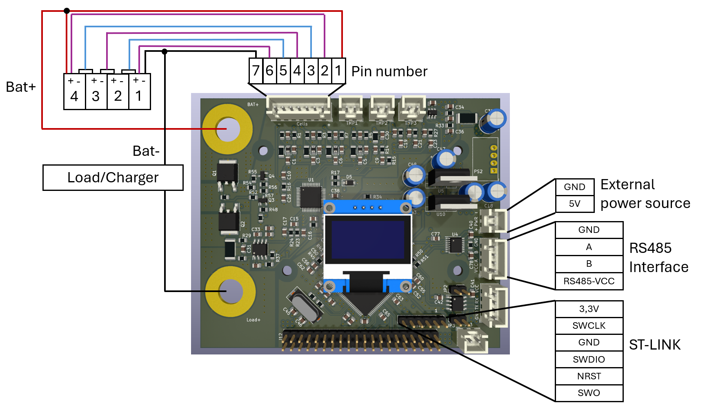

For the first Test you have to do some steps in preparation.
Flashing the BMS software¶
Connect the BMS with the ST-Link and PC
Flash the BMS-Project
Starting a charge and discharge test¶
For connecting the BMS with the cells, external power source, RS585 and the Load/Charger you can use additionally to the list, the graph below.
Connect the display
Connect the temperature sensors
Connect the battery pack to the BMS PCB
Without the battery pack, the BMS chip will not be powered
Connect the battery pack to the battery cycler
Connect the voltage meter from the cycler
Ensure power is supplied via a 5 V power supply
If the cycler is connected only afterwards, this may lead to measurement errors for the current, because in the first moment the current is calibrated
the Display should show the voltage for the cells and
Starting the logging (see at [[8. Logging with Python]]) on the Computer/Laptop
Start test
